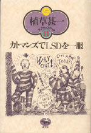
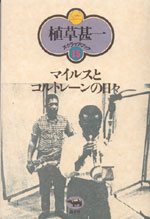

|
|
エッセイ・思想 | ||||||
| バリバリのハト派 女子供カルチャー反戦論 |
|||||||
| 荷宮和子 | |||||||
| 四六判 272頁 | |||||||
| 定価 1680円（本体1600円） | |||||||
| 4-7949-6637-7 C0095 | |||||||
| 「平和・自由・平等」の精神がゆらいでいる今「女子供文化」の見直しが求められている。『ベルサイユのばら』などの少女マンガ、手塚マンガ、宝塚の作品から平和・自由・平等を尊ぶ女子供文化のエッセンスをくみ取り、返す刀でイラク派遣、憲法改正論議などの危うい社会情勢を斬ってとる痛快反戦エッセイ。女子供文化の復興が日本を救う！ | |||||||
|
|
エッセイ・日本文学 | ||||||
| 語りの背景 | |||||||
| 加藤典洋 | |||||||
| 四六判 288頁 | |||||||
| 定価1995円（本体1900円） | |||||||
| 4-7949-6620-2 C0095 | |||||||
| 膝に猫、手には本、まなざしは同時代へ。漱石、ヘミングウェイを再読し、村上春樹、よしもとばなな、阿部和重らから21世紀的な考え方を知る。大岡昇平、埴谷雄高、鶴見俊輔、吉本隆明ら意中の人々とともに歩く。そして、日々の生活のささいな出来事を喜ぶ。文芸評論家のバラエティ・ブック。 | |||||||
| 海外文学・読書 | |
| 〔シリーズ 愛書・探書・蔵書〕 悪魔に魅入られた本の城 |
|
| オリヴェーロ・ディリベルト 望月紀子訳 | |
| 四六判 144頁 | |
| 定価1995円（本体1900円） | |
| 4-7949- 2663-4 C0398 | |
| 19世紀ドイツを代表する古代法学者、ノーベル文学賞受賞者であるテオドール・モムゼン。彼の4万冊収蔵の図書館は二度の火災で大半が焼失、モムゼン自身も髭に火が燃え移り死亡。ところが20世紀になり、なぜかモムゼン蔵書印のある本が次々と意外なところで発見され……。その謎を追って浮かび上がる数奇なドラマ。本を愛するのも破壊するのも人間なのだ。ドイツ文化史家・池田浩士氏のエッセイ「学者と蔵書」を付す。 |
| 映画 | |||||||
| 植草甚一スクラップ・ブック2 第二回配本 ヒッチコック万歳！ |
|||||||
| 植草甚一 | |||||||
| 四六判 280頁 | |||||||
| 定価1470円（本体1400円） | |||||||
| 4-7949- 2562-X C0374 | |||||||
| 植草さんはヒッチコックについて、びっくりするほどたくさんの文章を書いてきた。長い伝記もあれば小さな映画評もある。すべてに溢れんばかりの愛情がこめられている。「ヒッチコックは、ほんとうによく映画を知っている監督だ。」 映画評も伝記もインタビューも総動員！ ぼくらの心を躍らせる、映画の神様大研究。（解説・小林信彦） | |||||||
 |
エッセイ | ||||||
| 植草甚一スクラップ・ブック11 第二回配本 カトマンズでLSDを一服 |
|||||||
| 植草甚一 | |||||||
| 四六判 248頁 | |||||||
| 定価1470円（本体1400円） | |||||||
| 4-7949-2571-9 CO370 | |||||||
| トリップ・トゥ・アナザー・ワールド！ ヒッピーやアングラ文化、そしてウーマン・リブまで、老いることなきJ・J氏の眼がとらえた若者たちの世界。ハックスリーやカスタネダ…… おなじものをちがったふうに見ることで、新しい感覚を手に入れようとした人たちの記録を読んでみよう。（解説・片岡義男） | |||||||
 |
ジャズ | ||||||
| 植草甚一スクラップ・ブック15 第二回配本 マイルスとコルトレーンの日々 |
|||||||
| 植草甚一 | |||||||
| 四六判 256頁 | |||||||
| 定価1470円（本体1400円） | |||||||
| 4-7949-2575-1 C0373 | |||||||
| ともにビ・バップから出発し、一つの時代を築いたモダン・ジャズのリーダー2人。つねに最新の音をつくり出すマイルス。突然の死によってぼくたちを悲しませたコルトレーン。アメリカばかりでなくイギリスやフランスのジャズ誌までふんだんに引用した、植草さんならではのユニークなジャズ・エッセー。（解説・清水俊彦） | |||||||